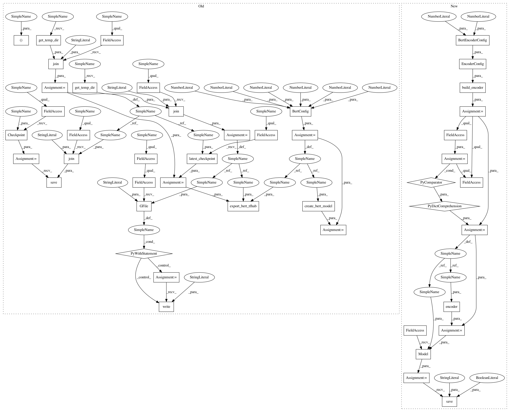

a9edf4728b1ce8a9d48e4b01a7f8e0eecee657f6,official/nlp/tasks/sentence_prediction_test.py,SentencePredictionTaskTest,_export_bert_tfhub,#SentencePredictionTaskTest#,216
Before Change
self.assertEqual(outputs["sentence_prediction"].shape.as_list(), [8, 1])
def _export_bert_tfhub(self):
bert_config = configs.BertConfig(
vocab_size=30522,
hidden_size=16,
intermediate_size=32,
max_position_embeddings=128,
num_attention_heads=2,
num_hidden_layers=1)
_, encoder = export_tfhub.create_bert_model(bert_config)
model_checkpoint_dir = os.path.join(self.get_temp_dir(), "checkpoint")
checkpoint = tf.train.Checkpoint(model=encoder)
checkpoint.save(os.path.join(model_checkpoint_dir, "test"))
model_checkpoint_path = tf.train.latest_checkpoint(model_checkpoint_dir)
vocab_file = os.path.join(self.get_temp_dir(), "uncased_vocab.txt")
with tf.io.gfile.GFile(vocab_file, "w") as f:
f.write("dummy content")
hub_destination = os.path.join(self.get_temp_dir(), "hub")
export_tfhub.export_bert_tfhub(bert_config, model_checkpoint_path,
hub_destination, vocab_file)
return hub_destination
def test_task_with_hub(self):
hub_module_url = self._export_bert_tfhub()
After Change
self.assertEqual(outputs["sentence_prediction"].shape.as_list(), [8, 1])
def _export_bert_tfhub(self):
encoder = encoders.build_encoder(
encoders.EncoderConfig(
bert=encoders.BertEncoderConfig(vocab_size=30522, num_layers=1)))
encoder_inputs_dict = {x.name: x for x in encoder.inputs}
encoder_output_dict = encoder(encoder_inputs_dict)
core_model = tf.keras.Model(
inputs=encoder_inputs_dict, outputs=encoder_output_dict)
hub_destination = os.path.join(self.get_temp_dir(), "hub")
core_model.save(hub_destination, include_optimizer=False, save_format="tf")
return hub_destination
def test_task_with_hub(self):
hub_module_url = self._export_bert_tfhub()
In pattern: SUPERPATTERN
Frequency: 3
Non-data size: 45
Instances
Project Name: tensorflow/models
Commit Name: a9edf4728b1ce8a9d48e4b01a7f8e0eecee657f6
Time: 2020-12-13
Author: chendouble@google.com
File Name: official/nlp/tasks/sentence_prediction_test.py
Class Name: SentencePredictionTaskTest
Method Name: _export_bert_tfhub
Project Name: tensorflow/models
Commit Name: a9edf4728b1ce8a9d48e4b01a7f8e0eecee657f6
Time: 2020-12-13
Author: chendouble@google.com
File Name: official/nlp/tasks/question_answering_test.py
Class Name: QuestionAnsweringTaskTest
Method Name: _export_bert_tfhub
Project Name: tensorflow/models
Commit Name: a9edf4728b1ce8a9d48e4b01a7f8e0eecee657f6
Time: 2020-12-13
Author: chendouble@google.com
File Name: official/nlp/tasks/tagging_test.py
Class Name: TaggingTest
Method Name: _export_bert_tfhub
Project Name: tensorflow/models
Commit Name: a9edf4728b1ce8a9d48e4b01a7f8e0eecee657f6
Time: 2020-12-13
Author: chendouble@google.com
File Name: official/nlp/tasks/sentence_prediction_test.py
Class Name: SentencePredictionTaskTest
Method Name: _export_bert_tfhub